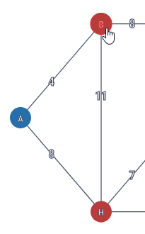
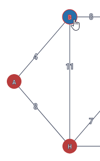
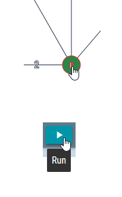

Setting your prediction
Compare your human intuition to the algorithm's result!



Click on a neighbouring node to add to your predicted path
Click on the source node to remove it from your predicted path
Click the run button again when you're done to run the algorithm